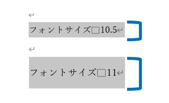
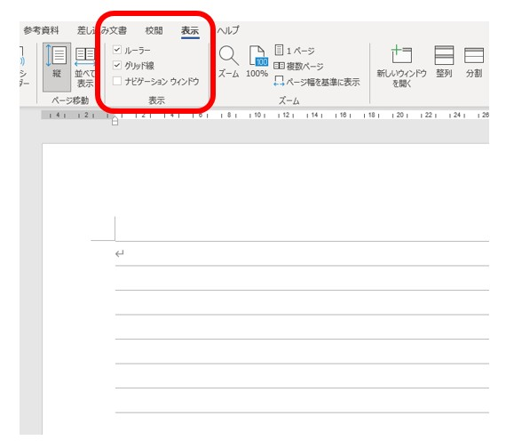
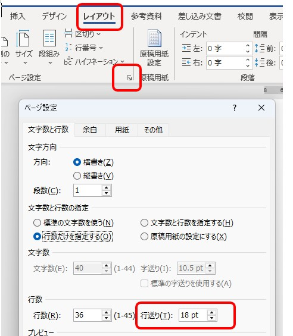
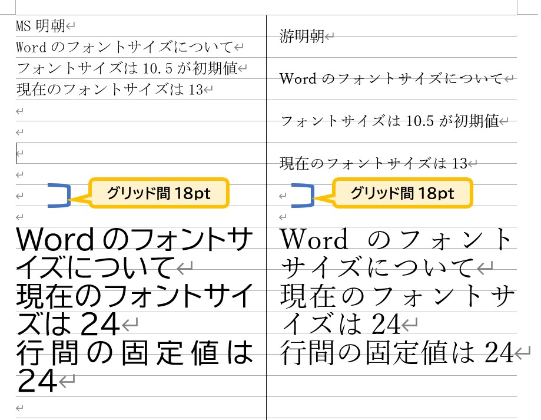

Wordの行間が広がるのはなぜ？11ptで急に広くなる原因を解説
11ptにしたら、なぜ行間が広がる？
Wordで文章を打っていて、文字のサイズを標準の「10.5pt」から、ほんの少しだけ大きい「11pt」に変えた瞬間、行の間がドカンと空いて、スカスカになってしまった経験はありませんか？
文字はほんのわずかに大きくなっただけなのに、見た目の印象がこれほど極端に変わってしまうのは不思議ですよね。

▲ 文字を選択したときの背景色（グレーの範囲）が11ptで急激に広がります
「操作を間違えたのかな？」と不安になる必要はありません。実はこれ、Wordが裏側で守っている「あるルール」が原因なのです。
実はWordには「18pt」の行グリッドがある
Wordの画面は一見すると白紙ですが、実は裏側にノートの罫線のような「行グリッド線」という透明なレールが敷かれています。初期設定では、文字はこのレールの上に磁石のように吸い付いて並ぶ仕組みになっています。

▲ [表示]タブで「グリッド線」にチェックを入れると、隠れたレールが姿を現します
そして、このレールの幅（間隔）は、標準設定では「18pt」に決まっています。この数字こそが、スカスカ現象を引き起こす正体です。

▲ [ページ設定] の奥深くを確認すると、この「18pt」という数字が書かれています
Wordは「文字本体」の周りに、読みやすさを保つための「上下の余白（クッション）」をセットにして配置しようとします。10.5ptの文字ならこのクッションを含めても18ptのレール内に収まりますが、11ptになると合計が18ptをほんの少し超えてしまいます。
すると、Wordは「1行分には収まりきらない」と判断し、2行分（36pt）の広大なスペースを確保してしまうのです。これが、急に行間が広がる仕組みです。
フォントによって違いが出る理由
同じ「11pt」に設定しても、使っているフォントの種類によって「行間が広がるタイミング」が違う点にも注目してみましょう。これは、フォントごとに「余白（クッション）」の厚みの設計が異なるためです。

▲ フォントのデザインによって、レールからはみ出すタイミングが変わります
-
游明朝（今の標準フォント）
読みやすさを重視して上下の余白がたっぷり取られています。そのため、11ptにした時点ですぐに18ptのレールからはみ出し、スカスカになります。
-
MS明朝（以前の標準フォント）
余白が非常にコンパクトに設計されています。そのため、13ptまで文字を大きくしても18ptのレールの中に踏みとどまることができ、行間が広がりにくい特性があります。
行間を狭くする・整える方法
文章を書き終えたあと、この意図しない隙間を解消して、思い通りの見た目に整えるには、以下の2つの設定を使い分けましょう。
[段落]の設定画面にある「1ページの行数を指定時に文字を行グリッド線に合わせる」のチェックを外します。磁石のようなルールをなくすことで、文字の大きさに合わせた自然な高さで並ぶようになります。
行間の設定を「固定値」に変更し、数値を指定します。画像のように、レールの影響を一切受けずに、どのフォントでも均一な間隔で整えることができます。
「固定値」を使うときは、フォントサイズと同じか、それより数ポイント大きい数字（18pt〜24ptなど）を目安に入れると、読みやすく落ち着いた仕上がりになります。1枚の紙に情報を収めたいときの最終手段として覚えておくと便利ですよ。
まとめ
Wordの行間が11ptで急に広がるのは、操作ミスではなく、「裏側に隠れた18ptのレール」と「フォントのデザイン」がぶつかってしまったからという明確な理由がありました。
- 標準のレール幅は18pt。
- 游明朝は11ptでレールをはみ出し、スカスカになる。
- MS明朝は13ptまでなら、レールの内側に耐えられる。
- 直したいときは「チェックを外す」か「固定値」を使う。
仕組みさえ分かっていれば、チェックを外したり固定値を使ったりすることで簡単に対処できます。道具の性質を知ることで、Wordを使った書類作成はずっとスムーズになりますよ。